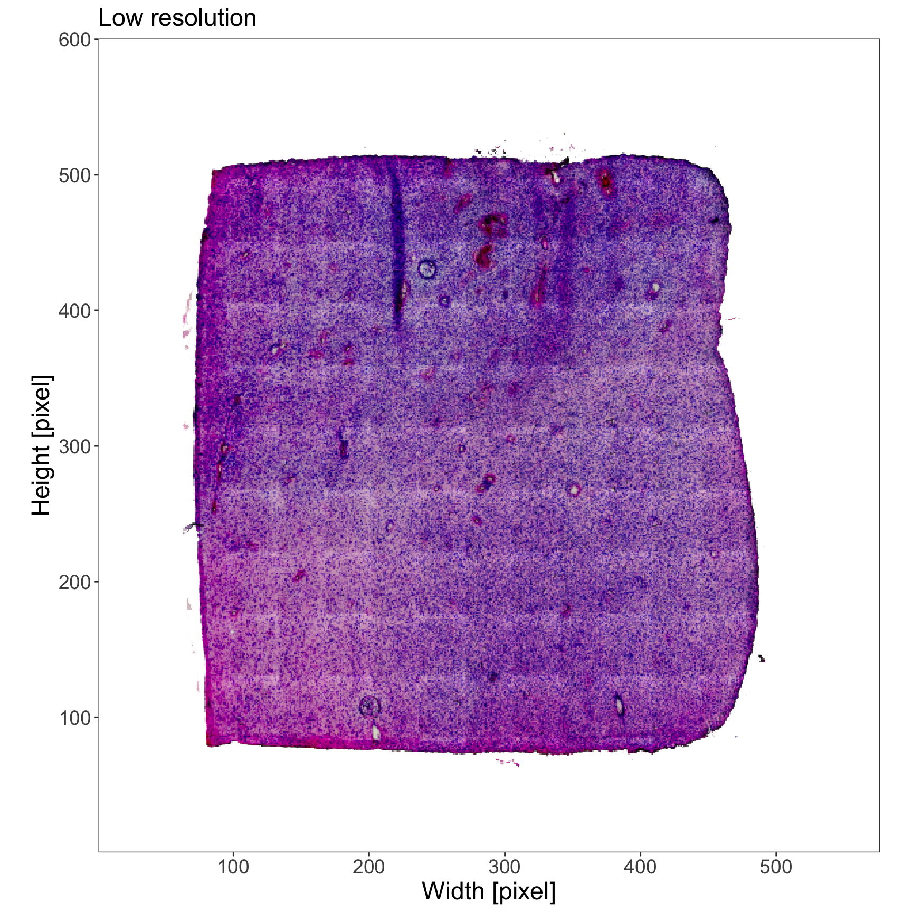
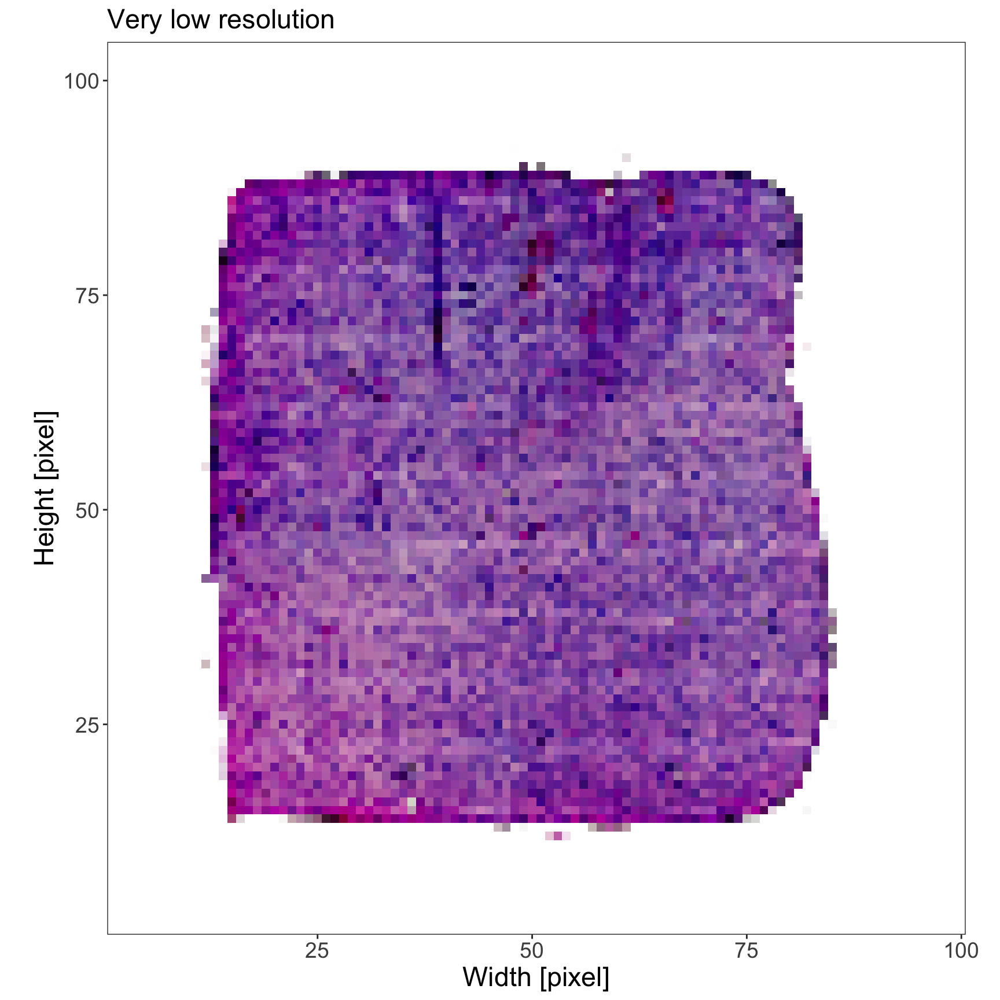
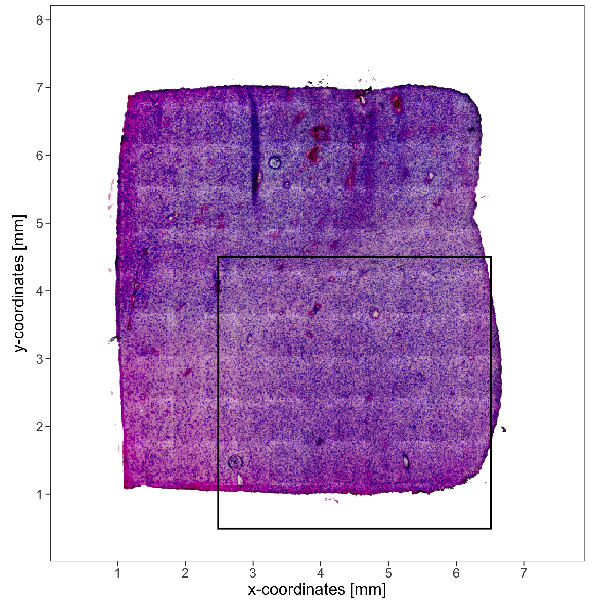
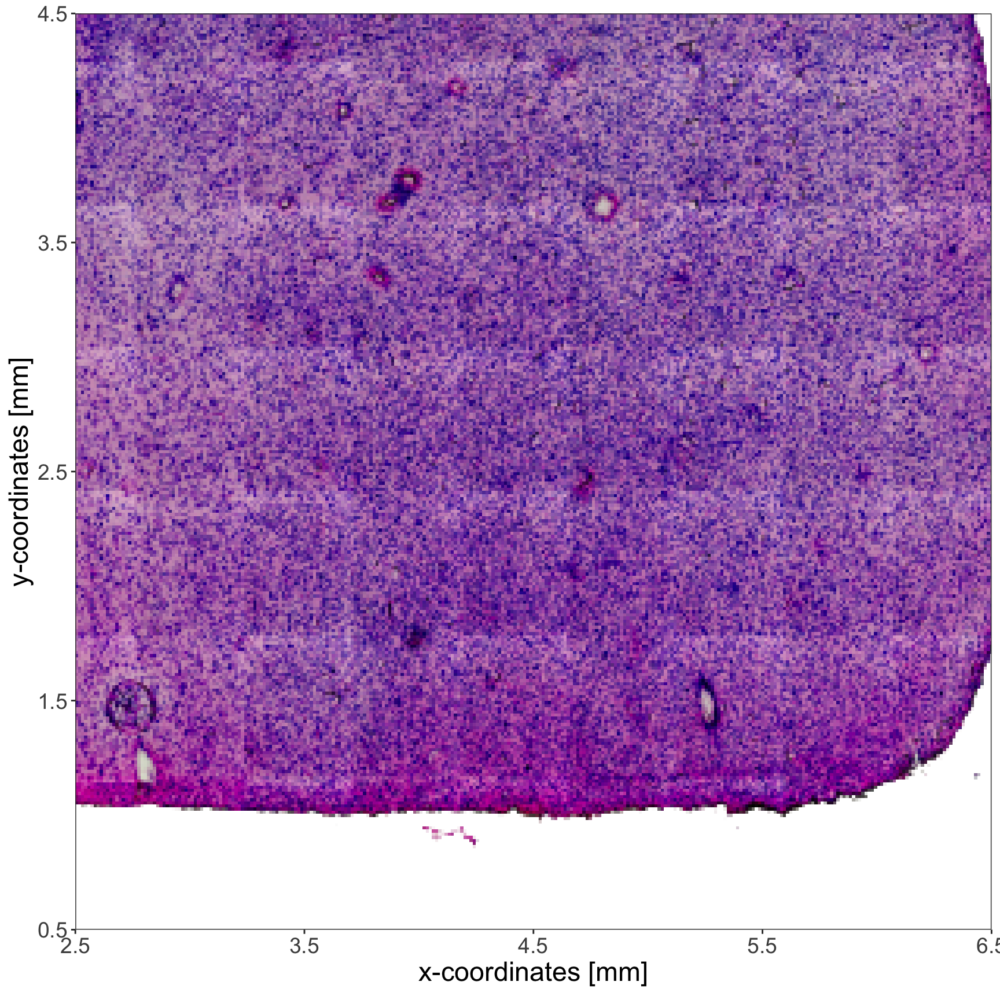
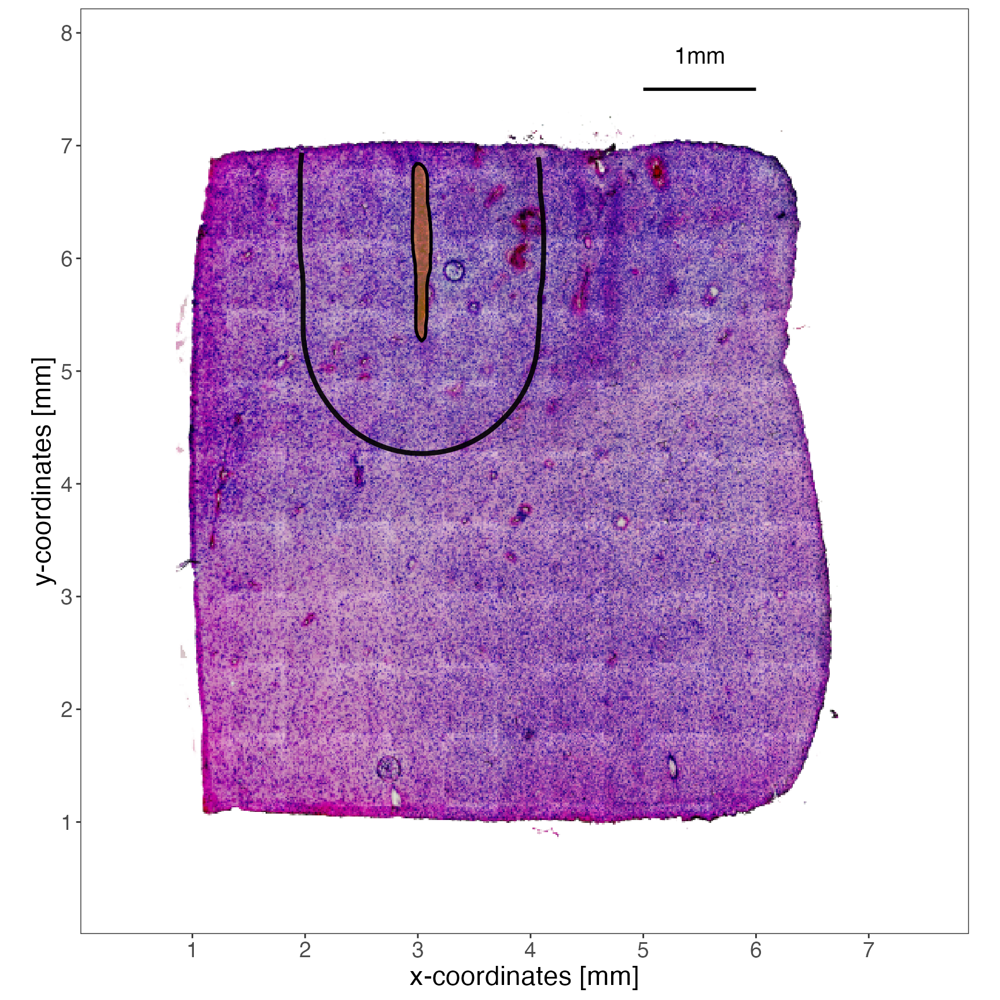
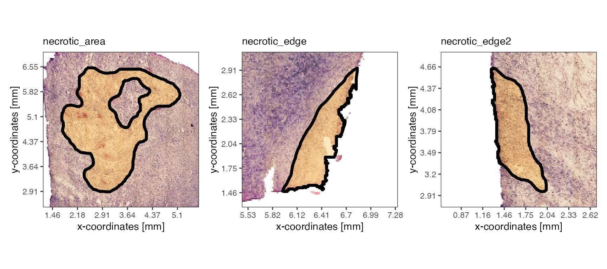
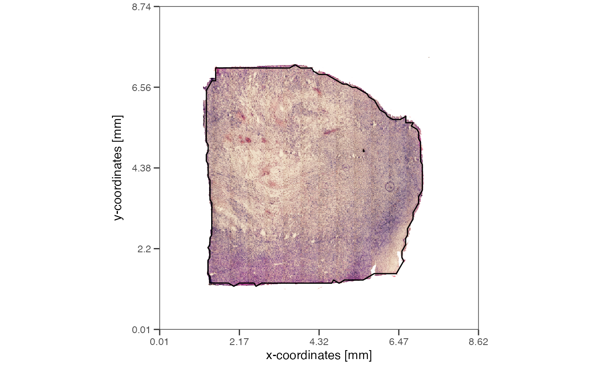
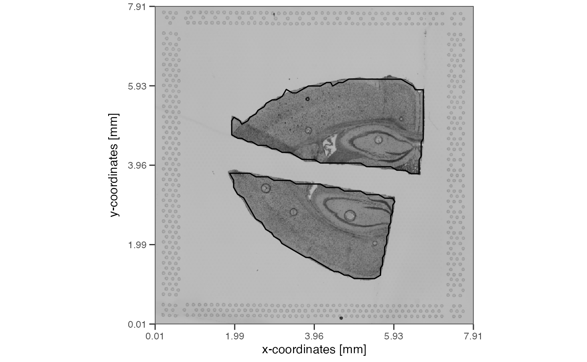

spatial-measures.RmdMany questions researchers try to answer in spatial transcriptomics and image analysis are space related. Coordinates of the observations are often scaled to the resolution of the image that is currently in use. In case of the Visium platform, if one exchanges the tissue_lowres_image.png with the tissue_hires_image.png from the 10X Visium output, the coordinates of the barcoded spots are scaled accordingly to ensure that both, coordinates and image, stay aligned. Thus, coordinates can be used to answer spatial questions in relative but not in absolute measures. For instance, the statement: “The necrotic region spans an area of approximately 400pixels.” is useless. If pixels are used as a unit the area will always depend on the image resolution. This tutorial explains how SPATA2 computes the transition from pixel to SI units for the Visium platform with the pixel scale factor. Furthermore, it gives examples about how you can leverage working with SI distances.
# load required packages
library(SPATA2)
library(tidyverse)
# load SPATA2 inbuilt example data (and rename an image for this tutorial)
object_t275 <-
loadExampleObject("UKF275T") %>%
renameImage(img_name = "image1", new_img_name = "lowres")
text_size <- theme(text = element_text(size = 17.5))
plotImage(object_t275, img_name = "lowres") +
text_size +
labs(subtitle = "Normal resolution")
# very_low_res image has been registered using `registerImage()`
plotImage(object_t275, img_name = "very_low_res") +
text_size +
labs(subtitle = "Very low resolution")
To answer questions in absolute measures, distances must be converted to units of the *Système international d’unités (SI). That is, micrometers, millimeters, centimeters, etc. This is possible as most spatial -omic studies come with a ground truth.
In case of 10X
Visium this ground truth is the center to center distance between
two adjacent barcoded spots which is always 100um. Using this
information, the actual distances and areas can be computed with a pixel
scale factor. This factor is computed automatically by
initiateSpataObjectVisium().
(If you have multiple images registered in your SPATA2
object, note that, by default, the pixel scale factor from the
active image is used.)
# how many um is one pixel in side lengths
getPixelScaleFactor(object_t275, unit = "um")## [1] 13.68328
## attr(,"unit")
## [1] "um/px"
# how many pixel is one um in side lengths
getPixelScaleFactor(object_t275, unit = "um", switch = TRUE)## [1] 0.07308187
## attr(,"unit")
## [1] "px/um"
# by default the pixel scale factor of the active image is used
getImageNames(object_t275)## [1] "lowres" "very_low_res"
# which is image 'lowres' in this example
activeImage(object_t275)## [1] "lowres"
# how many um is one pixel in side lengths in case of an even lower resolution?
getPixelScaleFactor(object_t275, unit = "um", img_name = "very_low_res")## [1] 78.94202
## attr(,"unit")
## [1] "um/px"The term pixel scale factor derives from a time where SPATA2
was solely thought to work with Visium datasets. It has been expanded to
include other platforms such as MERFISH which provides coordinates of
cells in micrometer units. If the platform provides the coordinates of
its observations in SI units the pixel scale factor theoretically isn’t
required but for the code of SPATA2 to work, such a scale factor must
exist in the SPATA2object. Therefore, it is set
automatically by the respective initiateSpataObject*()
function. E.g. in MERFISH data, the x- and y-coordinates are provided in
um units. Hence, the pixel scale factor of SPATA2 objects
initiated with initiateSpataObjectMERFISH() is always
1mm/px.
Multiple functions take arguments that, in some way, refer to
distance measures. SPATA2 makes use of the units
package to work with distances. If not explained otherwise in the
documentation you can provide the distance in pixel or in SI units.
Behind the scenes input is converted to pixel and aligned with the
current resolution. 4.1 Converting distances gives some examples of how
this is done.
Every SI unit of length is a valid distance unit.
validUnitsOfLength()
## nanometer micrometer millimeter centimeter decimeter meter pixel
## "nm" "um" "mm" "cm" "dm" "m" "px"
validUnitsOfLengthSI()
## nanometer micrometer millimeter centimeter decimeter meter
## "nm" "um" "mm" "cm" "dm" "m"
# wrappers around units::set_units()
as_micrometer(input = "4mm")
## 4000 [um]
as_millimeter(input = "4cm")
## 40 [mm]Pixel is not a valid distance unit in units. Pixel,
however, are important in image analysis. SPATA2 provides the wrappers
needed to reconcile both. They are named according to the unit of
interest. To transform between pixel and SI units of length the
SPATA2 object must be provided as the scale factor is
needed. See the documentation of ?is_dist to obtain more
information on how distance values must be specified.
### convert from si -> pixel
# example 1: a simple string works
as_pixel(input = "4mm", object = object_t275)
## [1] 292.3275
## attr(,"unit")
## [1] "px"
# example 2: a unit object works, too
unit_input <- units::set_units(x = 4, value = "mm")
unit_input
## 4 [mm]
class(unit_input)
## [1] "units"
as_pixel(input = unit_input, object = object_t275)
## [1] 292.3275
## attr(,"unit")
## [1] "px"
### convert from pixel -> si
# example 1: simple numeric input is interpreted as pixel
as_millimeter(
input = c(100, 200, 300),
object = object_t275
)
## Units: [mm]
## [1] 1.368328 2.736657 4.104985
# example 2: strings with px suffix work, too
as_micrometer(
input = c("50px", "200px", "800px"),
object = object_t275
)
## Units: [um]
## [1] 684.1642 2736.6568 10946.6271The following are a few examples of where actual distances might come into play.
# specifying x- and y-range while handling images
xrange = c("2.5mm", "6.5mm")
yrange = c("0.5mm", "4.5mm")
# where to set the breaks is a measure of distance, too
breaks <- str_c(0:8, "mm")
# vector of valid distance inputs
print(breaks)## [1] "0mm" "1mm" "2mm" "3mm" "4mm" "5mm" "6mm" "7mm" "8mm"
axes_add_on <- ggpLayerAxesSI(object_t275, unit = "mm", breaks = breaks)
rect_add_on <-
ggpLayerRect(
object = object_t275,
xrange = xrange,
yrange = yrange
)
plotImage(object = object_t275) +
rect_add_on +
axes_add_on +
text_size
plotImage(
object = object_t275,
xrange = xrange, # crop the image with distance input
yrange = yrange # crop the image with distance input
) +
text_size
plotImage(object_t275) +
ggpLayerAxesSI(object_t275, unit = "mm", breaks = breaks) +
ggpLayerSpatAnnOutline(object_t275, ids = "img_ann_1", fill = "orange") +
ggpLayerHorizonSAS(object_t275, id = "img_ann_1", distance = "1mm") +
ggpLayerScaleBarSI(object_t275, sb_dist = "1mm", sb_pos = c("5.5mm", "7.5mm"), text_size = 15, text_nudge_y = 10) +
text_size
In addition to distances, areas can be computed, too. This becomes interesting, for instance, if the area of an image annotation is of relevance to the biological question.
## [1] "nm2" "um2" "mm2" "cm2" "dm2" "m2" "px"Pixel are by definition squares which means that all sides are of the same length. This property is used in SPATA2 to use pixel as a unit of distance. It can, however, be a unit of area, too. E.g. 4px with a side length of 1um cover an area of 4um2 or an area of 4px. However, the number of pixels that cover a specific area again depends on the resolution of the image. Again, SPATA2 implements SI units of area.
## [1] "nm2" "um2" "mm2" "cm2" "dm2" "m2"Pixel is not among them. SPATA2 allows resolution dependent conversion from pixel to SI units and vice versa. As pixel are squares of equal sizes the scale factor used for distance conversion can be used in its squared form.
getPixelScaleFactor(object_t275, unit = "um2", img_name = "lowres")## [1] 187.2323
## attr(,"unit")
## [1] "um2/px"
# more um2 per pixel in the very low resolution image
# -> pixels are smaller
getPixelScaleFactor(object_t275, unit = "um2", img_name = "very_low_res")## [1] 6231.843
## attr(,"unit")
## [1] "um2/px"Functions that convert areas are named similar to those that convert
distances. If pixels are involved, the SPATA2 object must
be specified as the scale factor is needed.
# numeric input is interpreted as pixel
as_millimeter2(input = c(200, 400, 4000, 50000), object = object_t275)## Units: [mm^2]
## [1] 0.03744645 0.07489290 0.74892903 9.36161289
# if character, different units can be specified as input
as_centimeter2(input = c("4mm2", "400px"), object = object_t275)## Units: [cm^2]
## [1] 0.040000000 0.000748929
# process the diet example object
object_t313 <- identifyTissueOutline(example_data$object_UKF313T_diet)
# set ids of example spatial annotations
ids <- c("necrotic_area", "necrotic_edge", "necrotic_edge2")
plotSpatialAnnotations(object_t313, ids = ids, nrow = 1)
Compute the area that is covered by the tissue sample. Note that
tissue area is computed by tissue section which requires the tissue
outline as computed by identifyTissueOutline(). Note that
when the tissue outline computed with the observations is used the
returned area is an approximation of what can be seen on the image.
Using method = 'image' gives slightly more exact outputs if
the tissue is appropriately recognized.
# process the diet example object
object_mouse <- loadExampleObject("LMU_MCI")
object_mouse <- identifyTissueOutline(object_mouse)
# get tissue area by tisse section
getTissueArea(object_mouse, unit = "mm2")## Units: [mm^2]
## tissue_section_1 tissue_section_2
## 6.349445 7.945489
getTissueArea(object_t313, unit = "mm2")## 29.67623 [mm^2]
# left
plotImage(object_t313, unit = "mm") + ggpLayerTissueOutline(object_t313)
# right
plotImage(object_mouse, unit = "mm") + ggpLayerTissueOutline(object_mouse)
Compute the area that is covered by different image annotations and filter accordingly. Extracting the values can be used for further subsetting.
# use the three necrotic ids from above
spat_ann_areas <-
getSpatAnnArea(object = object_t313, ids = ids, unit = "mm2")
print(spat_ann_areas)## Units: [mm^2]
## necrotic_area necrotic_edge necrotic_edge2
## 6.1849516 0.4618869 0.6252351
threshold <- units::set_units(x = 1, value = "mm2")
# keep only those with an area smaller than 1mm2
print(spat_ann_areas[spat_ann_areas < threshold])## Units: [mm^2]
## necrotic_edge necrotic_edge2
## 0.4618869 0.6252351